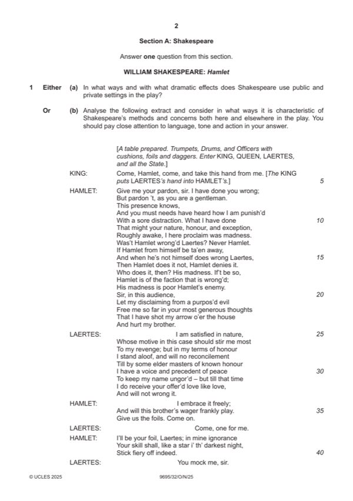

Question 1

Original paper page 2
Part 1(a) — solution
Answer: OR
In what ways and with what dramatic effects does Shakespeare use 25
public and private settings in the play?
Mark according to the levels of response marking criteria.
OR
Mark points
- Correct result: OR
Part 1(b) — solution
Analyse the following extract and consider in what ways it is 25
characteristic of Shakespeare’s methods and concerns both here and
elsewhere in the play. You should pay close attention to language, tone
and action in your answer.
Mark according to the levels of response marking criteria.
WILLIAM SHAKESPEARE: The Taming of the Shrew
EITHER
Mark points
- Include the ideas shown in the solution above.